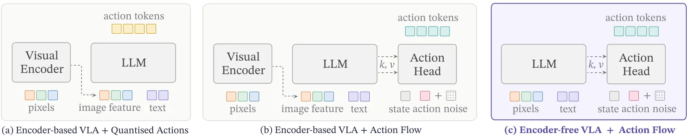
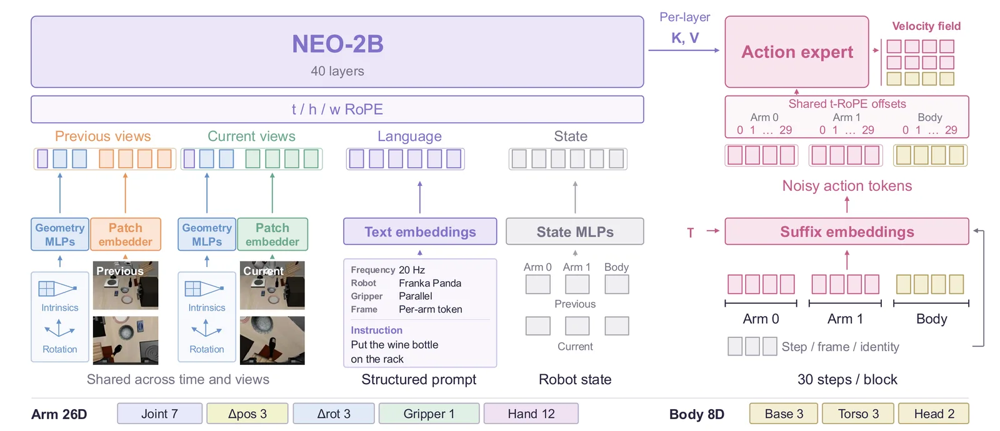
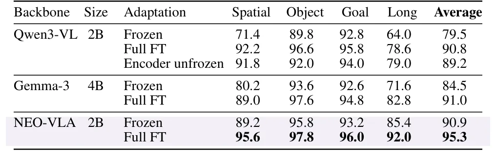
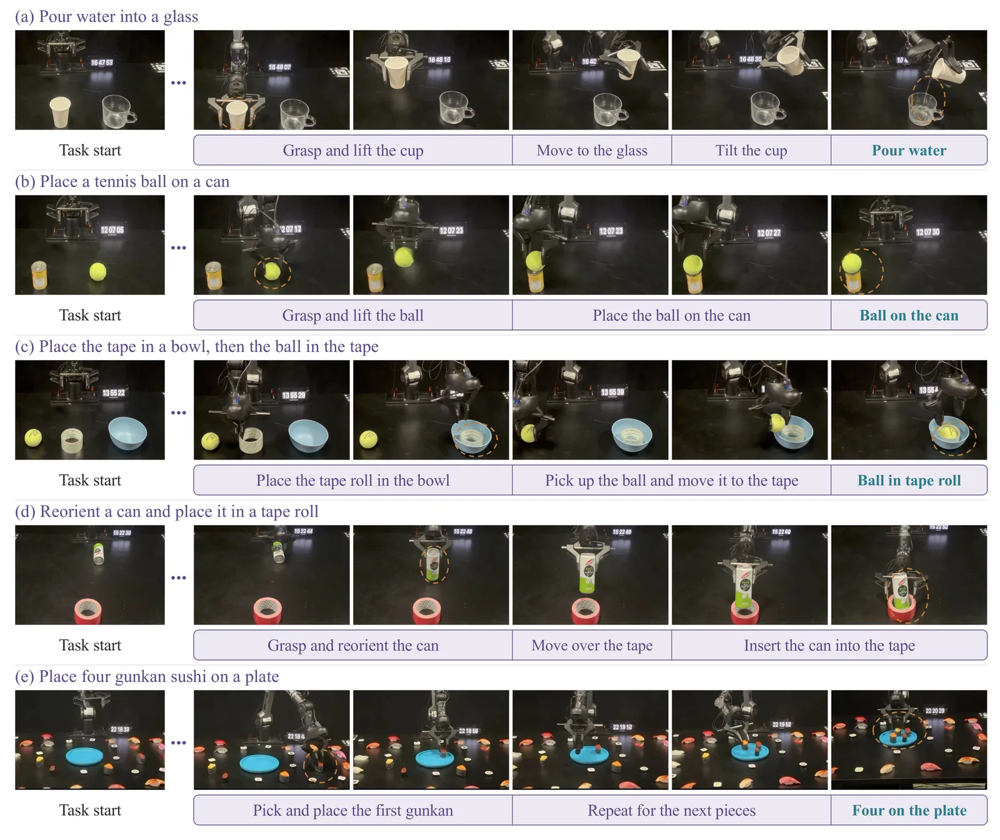

O gargalo da abstração visual em robótica
Os modelos Vision-Language-Action (VLA) modernos enfrentam um dilema estrutural fundamental. A premissa padrão é que a percepção deve ser primeiro comprimida por encoders visuais pré-treinados, como CLIP ou DINOv2, e apenas então o raciocínio de ação começa. Essa abordagem assume que a representação final do encoder contém toda a informação necessária para a tomada de decisão.
No entanto, a manipulação robótica depende criticamente de sinais visuais que são exatamente os mais vulneráveis a essa abstração. Geometria local, limites de objetos, profundidade e mudanças sutis de estado são frequentemente diluídos quando a imagem é forçada a passar por um bottleneck semântico. A pergunta que motiva este trabalho é: as políticas de ação devem herdar um ponto final visual fixo ou devem acessar diretamente o cálculo visual em evolução?

A arquitetura NEO-VLA
Os autores propõem o NEO-VLA, uma estrutura nativa que remove o encoder visual separado. Em vez de converter pixels em features via um módulo externo, o modelo utiliza camadas de convolução patch leves para tokenizar as imagens. Esses tokens visuais evoluem conjuntamente com os tokens de linguagem ao longo do backbone do modelo.
Essa mudança estrutural permite que um especialista de ação (action expert), baseado em flow-matching, acesse representações visuais condicionadas à instrução em diferentes profundidades do backbone. Isso transforma a profundidade de leitura visual em uma escolha explícita da política, em vez de uma limitação imposta por uma interface fixa.
Como o processamento nativo funciona
No fluxo do NEO-VLA, as observações de visão múltipla preservam sua proporção original e entram em um embedder de patches compartilhado. Não há uso de Transformers visuais, autoencoders ou codebooks de vetor-quantização. A entrada é direta: pixels e palavras são processados em uma arquitetura holística única.
O especialista de ação lê chaves e valores (keys and values) cacheados de várias camadas do backbone. Diferentemente dos modelos tradicionais, onde o acesso a camadas intermediárias de um encoder pré-treinado não reproduz o mesmo benefício, o pré-treinamento nativo do NEO-VLA molda essas representações iniciais para serem prontas para controle. Isso significa que a informação de baixo nível é preservada de forma funcional desde o início.

Análise de profundidade e camadas
Uma das contribuições centrais do paper é a investigação de quais camadas do backbone são mais valiosas para a ação. As análises revelam um padrão claro dependente da profundidade. Com o backbone congelado, as leituras que incluem camadas iniciais superam consistentemente aquelas restritas a representações tardias.
Após o ajuste fino completo (full fine-tuning), a combinação de recursos iniciais e tardios performa melhor. Isso indica que o controle robusto beneficia-se do acesso a toda a hierarquia de representação visual, e não apenas ao resultado final abstrato. Intervenções diretas confirmam que a informação crítica para a ação emerge bem antes da representação visual final.
Resultados no benchmark LIBERO
A avaliação foi realizada no conjunto de dados LIBERO, medindo taxas de sucesso em tarefas de manipulação. O NEO-VLA de 2B parâmetros foi comparado com Qwen3-VL-2B e Gemma-3-4B, ambos pré-treinados com o mesmo conjunto Open X-Embodiment.
Com o backbone congelado, o NEO-VLA atingiu 90,9% de sucesso médio, superando significativamente o Qwen3-VL (79,5%) e o Gemma-3 (84,5%). Curiosamente, a pontuação do NEO-VLA congelado foi comparável aos resultados de ajuste fino completo dos modelos baseados em encoder. Isso sugere que a representação nativa já é altamente transferível para tarefas de política sem necessidade de remodelar o backbone.

Impacto do ajuste fino e escala
O ajuste fino completo (full fine-tuning) do NEO-VLA melhorou ainda mais o desempenho, elevando a média para 95,3%. No entanto, o paper destaca que a escala adicional sozinha não recupera a lacuna observada em outros modelos. A arquitetura nativa oferece uma base superior que a escala bruta não pode substituir se a interface visual for inadequada.
No subset LIBERO-Long, que envolve tarefas mais complexas e de longo prazo, o NEO-VLA congelado atingiu 85,4%, excedendo os resultados de ajuste fino completo dos modelos concorrentes. Isso reforça a ideia de que a preservação de detalhes geométricos e espaciais desde as primeiras camadas é crucial para a execução de sequências de ação prolongadas.
Limitações e o próximo gargalo
Apesar dos avanços, o NEO-VLA não é uma solução perfeita. O modelo demonstra alta robustez quando a aparência ou a observação da cena muda, mas permanece desafiado quando a configuração espacial ou o objetivo da tarefa muda. Essa assimetria sugere que o próximo gargalo na inteligência encarnada pode não ser mais a percepção, mas a conversão do entendimento perceptual em ação flexível sob geometria e intenção variáveis.

Conclusão: Representações úteis para controle
O NEO-VLA desafia a suposição comum de que a ação deve operar em representações visuais já destiladas para compreensão semântica. Os resultados indicam que o controle eficaz beneficia-se de reter acesso ao cálculo visual antes que ele colapse em uma representação semântica final.
A arquitetura nativa não é apenas uma remoção de encoder, mas uma reavaliação de como as representações visuais são formadas e expostas à política. Ao permitir que o especialista de ação acesse a hierarquia de representação completa, o NEO-VLA oferece um passo em direção a modelos que são não apenas semanticamente significativos, mas intrinsicamente úteis para o controle robótico.
O que fica
- Modelos VLA tradicionais comprimem a visão antes do raciocínio, perdendo detalhes geométricos cruciais para o controle.
- O NEO-VLA processa pixels e texto juntos no backbone, permitindo acesso a features de camadas intermediárias.
- Acesso nativo a representações iniciais supera o acesso direto a features de encoders existentes.
- O modelo é robusto a mudanças de aparência, mas ainda luta com mudanças na configuração espacial das tarefas.
Paper original: From Pixels to Actions - Towards Native Vision-Language-Action Policies
Comentários
Nenhum comentário ainda. Seja o primeiro.